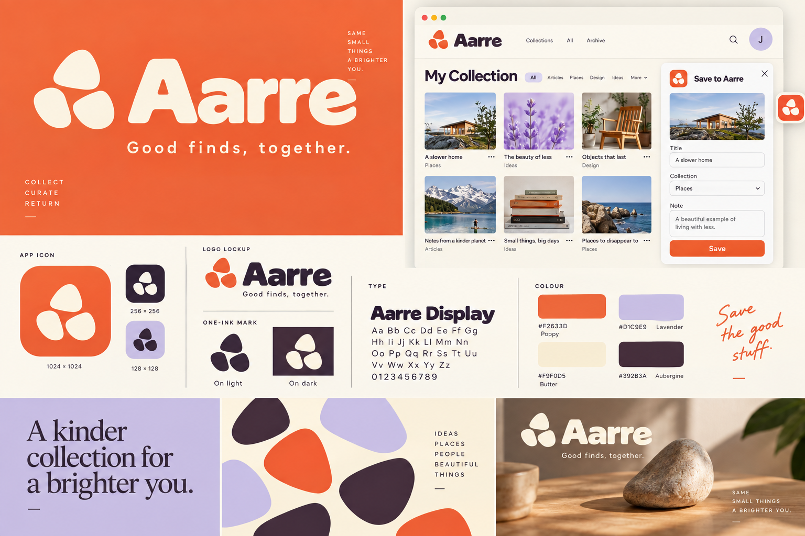
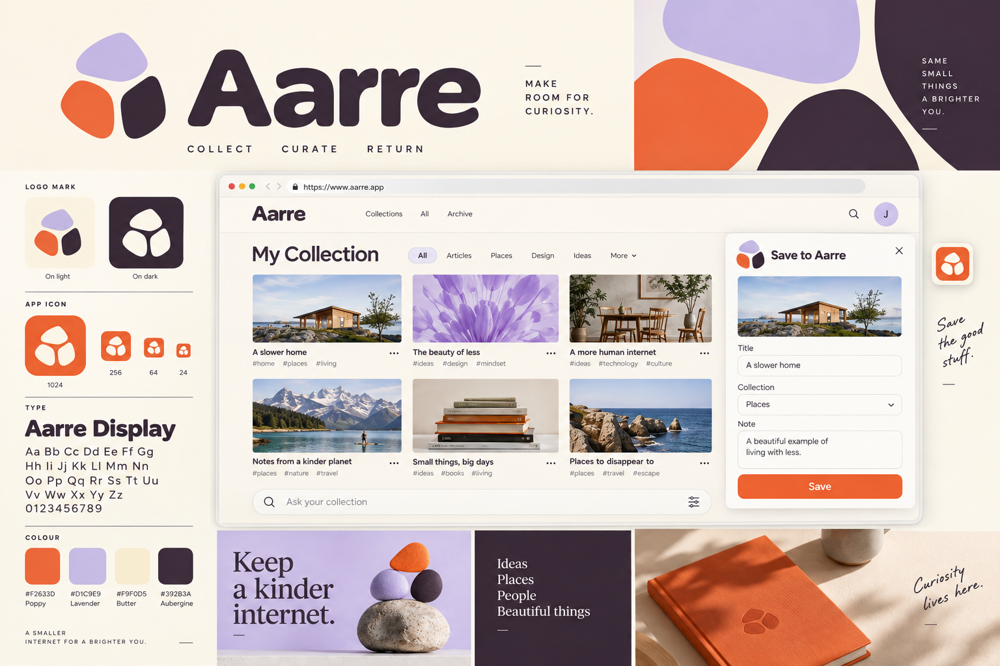
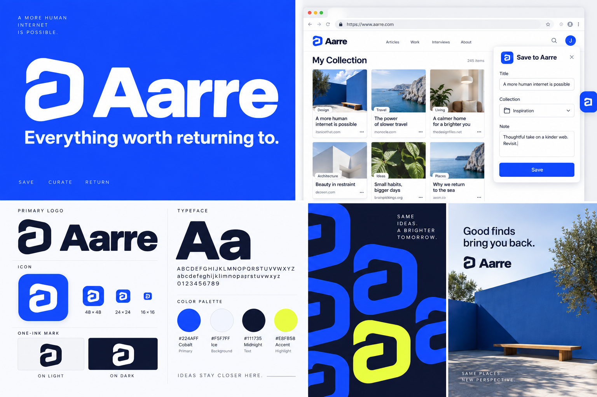
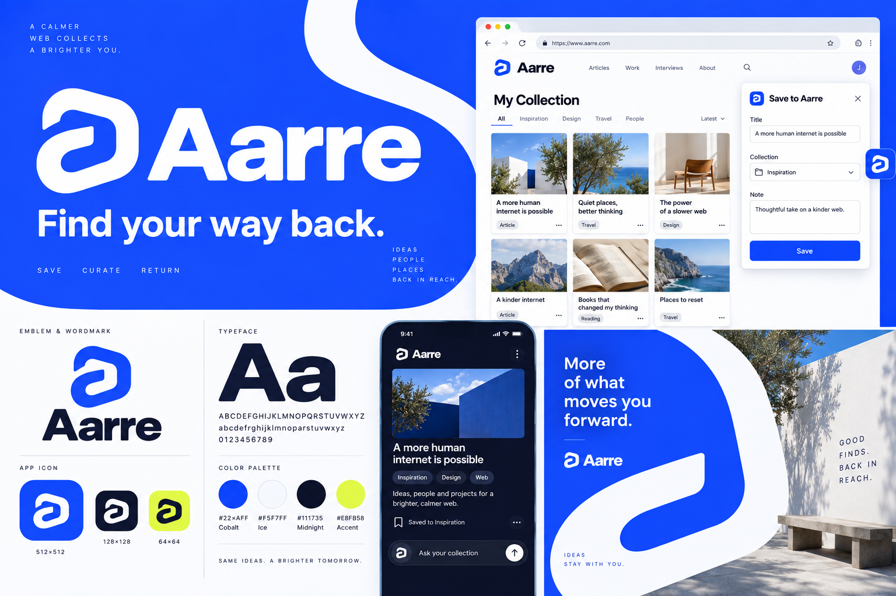
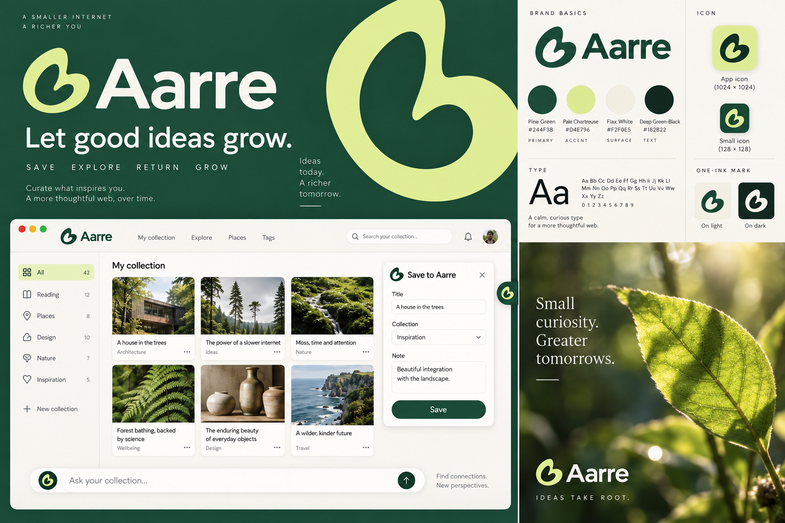
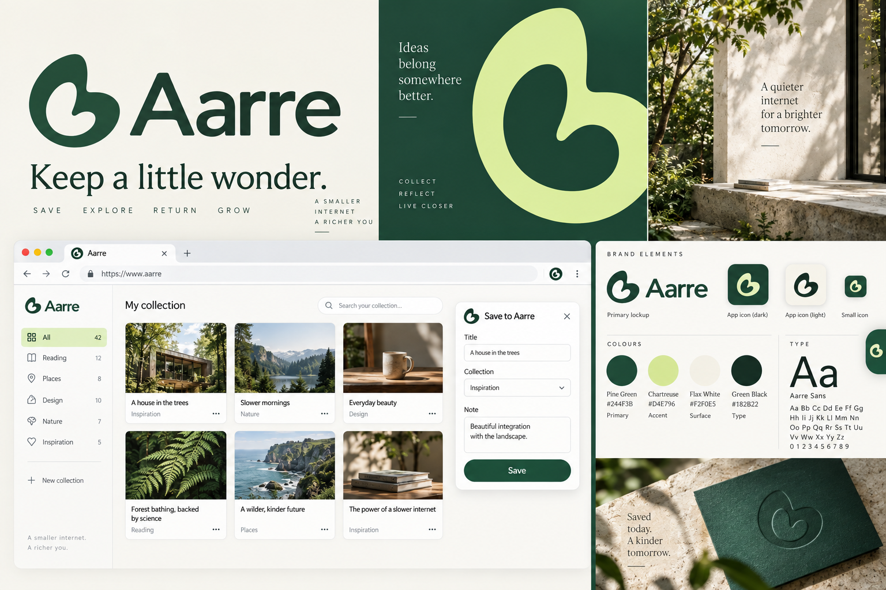

A1 聚拢
↗圆润、亲切，收藏感更直接。
保留三枚不规则块面的识别，让外轮廓和间隙更稳定；橘红色主导，宽厚字标与散布图形强化轻松感。
沿拾集、回流、林间继续发展。每组保留原方向作对照，探索标志、字体和产品应用的不同表达。
查看此前十套方向 ↗ 原方向 03 · 拾集 ↗
原方向 03 · 拾集 ↗
保留橘红、淡紫和三枚不规则块面，比较更紧凑与更完整的图形结构。
下方两套为新延展，点击图稿查看原尺寸。
圆润、亲切，收藏感更直接。
保留三枚不规则块面的识别，让外轮廓和间隙更稳定；橘红色主导，宽厚字标与散布图形强化轻松感。

依然轻松，但更有秩序和包容感。
把三块图形拼成更完整的收纳轮廓，保留宽裕的留白缝隙；奶油色与淡紫色占比提高，字标更舒展。
 原方向 02 · 回流 ↗
原方向 02 · 回流 ↗
保留钴蓝与 a 形回环，比较清晰的几何秩序和更流畅的运动感。
下方两套为新延展，点击图稿查看原尺寸。
辨识直接，像一件可靠的数字工具。
以原来的 a 形回环为基础，调整转角和开口的秩序；钴蓝保持强识别，图标与紧凑界面的关系更统一。

更轻快、更连续，突出重新发现的感觉。
保留钴蓝与回环识别，让路径更流畅、开口更鲜明；用放大的回环曲线组织版面，增加速度感和轻盈感。
 原方向 05 · 林间 ↗
原方向 05 · 林间 ↗
保留松绿、嫩黄与有机回环，比较向上的生长感和安静的围合感。
下方两套为新延展，点击图稿查看原尺寸。
自然、亲切，有一点向上的活力。
延续松绿与嫩黄色，修整双瓣回环的轮廓和内孔；更明亮的配色比例与柔和字标表达自然生长。

更沉静、更耐看，像保存好东西的小小空间。
把有机回环调整为更开阔的围合形，放大内侧留白；深松绿、亚麻白与轻量字标形成更克制的表达。